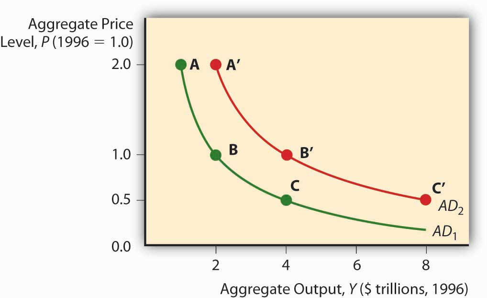
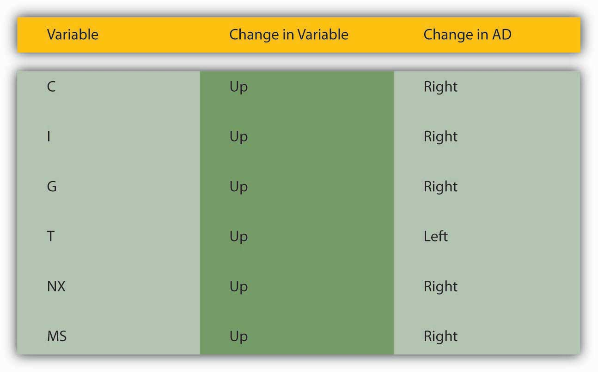

By the end of this chapter, students should be able to:
The IS-LM model isn’t entirely agreeable to policymakers because it examines only the short term, and when pressed into service for the long-term, or changes in the price level, it suggests that policy initiatives are more likely to mess matters up than to improve them. In response, economists developed a new theory, aggregate demand and supply, that relates the price level to the total final goods and services demanded (aggregate demand [AD]) and the total supplied (aggregate supply [AS]). This new framework is attractive for several reasons: (1) it can be used to examine both the short and the long run; (2) it takes a form similar to the microeconomic price theory model of supply and demand, so it is familiar; and (3) it gives policymakers some grounds for implementing activist economic policies. To understand aggregate demand and supply theory, we need to understand how each of the curves is derived.
The aggregate demand curve can be derived three ways, through the IS-LM model, with help from the quantity theory of money, or directly from its components. Remember that Y = C + I + G + NX. As the price level falls, ceteris paribus, real money balances are higher. That spells a lower interest rate. A lower interest rate, in turn, means an increase in I (and hence Y). A lower interest rate also means a lower exchange rate and hence more exports and fewer imports. So NX also increases. (C might be positively affected by lower i as well.) As the price level increases, the opposite occurs. So the AD curve slopes downward.
Figure 23.1 Aggregate demand curve
The quantity theory of money also shows that the AD curve should slope downward. Remember that the quantity theory ties money to prices and output via velocity, the average number of times annually a unit of currency is spent on final goods and services, in the so-called equation of exchange:
where
M = money supply
V = velocity of money
P = price level
Y = aggregate output
If M = $100 billion and V = 3, then PY must be $300 billion. If we set P, the price level, equal to 1, Y must equal $300 billion (300/1). If P is 2, then Y is $150 billion (300/2). If it is .5, then Y is $600 billion (300/.5). Plot those points and you get a downward sloping curve, as in Figure 23.1 "Aggregate demand curve". The AD curve shifts right if the MS increases and left if it decreases. Continuing the example above, if we hold P constant at 1.0 but double M to $200 billion, then Y will double to $600 billion (200 × 3). (Recall that the theory suggests that V changes only slowly.) Cut M in half ($50 billion) and Y will fall by half, to $150 billion (50 × 3).
Figure 23.2 Factors that shift the aggregate demand curve
For a summary of the factors that shift the AD curve, review Figure 23.2 "Factors that shift the aggregate demand curve".
The aggregate supply curve is a tad trickier because it is believed to change over time. In the long run, it is thought to be vertical at Ynrl, the natural rate of output concept introduced earlier. In the long run, the economy can produce only so much given the state of technology, the natural rate of unemployment, and the amount of physical capital devoted to productive uses.
Figure 23.3 Short-run aggregate supply curve

In the short run, by contrast, the total value of goods and services supplied to the economy is a function of business profits, meant here simply as the price goods bear in the market minus all the costs of their production, including wages and raw material costs. Prices of final goods and services generally adjust faster than the cost of inputs like labor and raw materials, which are often “sticky” due to long-term contracts fixing their price. So as the price level rises, ceteris paribus, business profits are higher and hence businesses supply a higher quantity to the market. That is why the aggregate supply (AS) curve slopes upward in the short run, as in Figure 23.3 "Short-run aggregate supply curve".
The short-run AS curve shifts due to changes in costs and hence profits. When the labor market is tight, the wage bill rises, cutting into profits and shifting the AS curve to the left. Any so-called wage push from any source, like unionization, will have the same effect. If economic agents expect the price level to rise, that will also shift the AS curve left because they are going to demand higher wages or higher prices for their wares. Finally, changes in technology and raw materials supplies will shift the AS curve to the right or left, depending on the nature of the shock. Improved productivity (more output from the same input) is a positive shock that moves the AS curve to the right. A shortage due to bad weather, creation of a successful producer monopoly or cartel, and the like, is a negative shock that shifts the AS curve to the left.
Figure 23.4 Factors that shift the short-run aggregate supply curve

Also, whenever Y exceeds Ynrl, the AS curve shifts left. That is because when Y exceeds Ynrl, the labor market gets tighter and expectations of inflation grow. Reversing that reasoning, the AS curve shifts right whenever Ynrl exceeds Y. Figure 23.4 "Factors that shift the short-run aggregate supply curve" summarizes the discussion of the short-run AS curve.
Of course, this is all just a prelude to the main event: slapping these curves—AD, AS, and ASL (the long-run AS curve)—on the same graph at the same time. Let’s start, as in Figure 23.5 "Short-run equilibrium in the macroeconomy", with just the short-run AS and AD curves. Their intersection indicates both the price level P* (not to be confused with the microeconomic price theory model’s p*) and Y* (again not to be confused with q*). Equilibrium is achieved because at any P > P*, there will be a glut (excess supply), so prices (of all goods and services) will fall toward P*. At any P < P*, there will be excess demand, many bidders for each automobile, sandwich, haircut, and what not, who will bid prices up to P*. We can also now examine what happens to P* and Y* in the short run by moving the curves to and fro.
Figure 23.5 Short-run equilibrium in the macroeconomy

To study long-run changes in the economy, we need to add the vertical long-run aggregate supply curve (ASL) to the graph. As discussed above, if Y* is > or < Ynrl, the AS curve will shift (via the labor market and/or inflation expectations) until it Y* = Ynrl, as in Figure 23.6 "Long-run equilibrium in the macroeconomy". So attempts to increase output above its natural rate will cause inflation and recession. Attempts to keep it below its natural rate will lead to deflation and expansion.
Figure 23.6 Long-run equilibrium in the macroeconomy

The so-called self-correcting mechanism described above makes many policymakers uneasy, so the most activist among them argue that the long-run analysis holds only over very long periods. In fact, the great granddaddy, intellectually speaking, of today’s activist policymakers, John Maynard Keynes,http://en.wikipedia.org/wiki/John_Maynard_Keynes once remarked, “[The l]ong run is a misleading guide to current affairs. In the long run we are all dead. Economists set themselves too easy, too useless a task if in tempestuous seasons they can only tell us that when the storm is long past the ocean is flat again.”www.bartleby.com/66/8/32508.html Other economists (nonactivists, including monetarists like Milton Friedman) think that the short run is short indeed and the long run is right around the corner. Figuring out how short and long the short and long runs are is important because if the nonactivists are correct, policymakers are wasting their time trying to increase output by shifting AD to the right: the AS curve will soon shift left, leaving the economy with a higher price level but the same level of output. Similarly, policymakers need do nothing in response to a negative supply shockA sudden change affecting production of goods, such as a change in technology or input (materials, labor) prices. A negative shock decreases production while a positive one increases it, ceteris paribus. (which, as noted above, shifts AS to the left) because the AS curve will soon shift back to the right on its own, restoring both the price level and output. If the activists are right, on the other hand, policymakers can improve people’s lives by shifting AD to the right to counter, say, the effects of negative supply shocks by helping the AS curve to return to its original position or beyond.
The holy grail of economic growthReal per capita GDP. theory is to figure out how to shift Ynrl to the right because, if policymakers can do that, it doesn’t matter how short the long term is. Policymakers can make a difference—and for the better. The real business cycle theory of Edward Prescott suggests that real aggregate supply shocks can affect Ynrl.www.minneapolisfed.org/research/prescott This is an active area of research, and not just because Prescott took home the Nobel Prize in 2004 for his contributions to “dynamic macroeconomics: the time consistency of economic policy and the driving forces behind business cycles.”nobelprize.org/nobel_prizes/economics/laureates/2004/prescott-autobio.html Other economists believe that activist policies designed to shift AD to the right can influence Ynrl through a process called hysteresis.economics.about.com/library/glossary/bldef-hysteresis.htm It’s still all very confusing and complicated, so the author of this book and numerous others prefer bringing an institutional analysis to Ynrl, one that concentrates on providing economic actors with incentives to labor, to develop and implement new technologies, and to build new plant and infrastructure.
People often believe that wars induce long-term economic growth; however, they are quite wrong. Use Figure 23.7 "Inflation and output during and after two major U.S. wars, the Civil War (1861–1865) and World War I (1917–1918)" and the AS-AD model to explain why people think wars induce growth and why they are wrong.
Figure 23.7 Inflation and output during and after two major U.S. wars, the Civil War (1861–1865) and World War I (1917–1918)

Y* often increases during wars because AD shifts right because of increases in G (tanks, guns, ships, etc.) and I (new or improved factories to produce tanks, guns, ships, etc.) that exceed decreases in C (wartime rationing) and possibly NX (trade level decreases and/or subsidies provided to or by allies). Due to the right shift in AD, P* also rises, perhaps giving the illusion of wealth. After the war, however, two things occur: AD shifts back left as war production ceases and, to the extent that the long run comes home to roost, AS shifts left. Both lower Y* and the AD leftward shift decreases the price level. Empirically, wars are indeed often followed by recessions and deflation. Figure 23.7 "Inflation and output during and after two major U.S. wars, the Civil War (1861–1865) and World War I (1917–1918)" shows what happened to prices and output in the United States during and after the Civil War (1861–1865) and World War I (1914–1918; direct U.S. involvement, 1917–1918), respectively. The last bastion of the warmongers is the claim that, by inducing technological development, wars cause Ynrl to shift right. Wars do indeed speed research and development, but getting a few new gizmos a few years sooner is not worth the wartime destruction of great masses of human and physical capital.
Over the last two decades or so, many scholars, including the author of this textbook, have examined the link between financial development and economic growth. They have found that financial repression, severe underdevelopment of financial intermediaries and markets, can stymie growth and that financial development paves the way for growth. The reason is clear: by reducing asymmetric information and tapping economies of scale (and scope), the financial system efficiently links investors to entrepreneurs, ensuring that society’s scarce resources are allocated to their highest valued uses and that innovative ideas get a fair trial.
The research agenda of some of those scholars, including the author of this textbook, has recently broadened to include more of the institutional factors that enhance or reduce economic growth, sustained rightward movements of Ynrl. A leading model, set forth by two economic historians who teach economics at New York University’s Stern School of Business,w4.stern.nyu.edu/economics/facultystaff.cfm?doc_id=1019 is called the growth diamond or diamond of sustainable growth.w4.stern.nyu.edu/sternbusiness/spring_2007/sustainableGrowth.html Imagine a baseball or softball diamond. At the bottom of the diamond is home plate, the most important base in the game, where the player both begins and, if successful, ends his or her journey. Looking out from home, first base is at the right corner; second base is at the top of the diamond, dead ahead; and third base is at the diamond’s left corner. To score a run, a player must return to home plate after touching first, second, and third base, in that order. Countries are no different than ballplayers in this regard. For a country to get rich, it needs to progress from base to base in the proper order.
In the growth diamond, home plate is represented by government, first base by the financial system, second base by entrepreneurs, and third base by management. To succeed economically, as depicted in Figure 23.8 "The growth diamond", a country must first possess a solid home plate, a government that at a minimum protects the lives, liberty, and property of its citizens. Next, it must develop an efficient financial system capable of linking savers/investors to people with good business ideas, the entrepreneurs at second base. The managers at third take over after a product has emerged and matured.
Figure 23.8 The growth diamond

The growth diamond is a powerful model because it can be applied to almost every country on earth. The poorest countries never left home plate because their governments killed and robbed their citizens. Poor but not destitute countries never made it to first base, often because their governments, while not outright predatory, restricted economic liberty to the point that financiers and entrepreneurs could not thrive. In many such countries, the financial system is the tool of the government (indeed many banks in poor countries are owned by the state outright), so they allocate resources to political cronies rather than to the best entrepreneurs. Countries with middling income rounded the bases once or twice but found that managers, entrepreneurs, and financiers co-opted the government and implemented self-serving policies that rendered it difficult to score runs frequently. Meanwhile the rich countries continue to rack up the runs, growing stronger as players circle the bases in a virtuous or self-reinforcing cycle.
In the early nineteenth century, Ontario, Canada (then a colony of Great Britain), and New York State (then part of a fledgling but independent United States) enjoyed (perhaps hated is a better word here!) a very similar climate, soil type, and flora and fauna (plants and animals). Yet the population density in New York was much higher, farms (ceteris paribus) were worth four times more there than on the north side of Lake Ontario, and per capita incomes in New York dwarfed those of Ontario. What explains those differences?
The growth diamond does. By the early 1800s, the United States, of which New York State was a part, had put in place a nonpredatory government and a financial system that, given the technology of the day, was quite efficient at linking investors to entrepreneurs, the activities of whom received governmental sanction and societal support. A nascent management class was even forming. Ontario, by contrast, was a colony ruled by a distant monarch. Canadians had little incentive to work hard or smart, so they didn’t, and the economy languished, largely devoid of banks and other financial intermediaries and securities markets. As late as the 1830s, New York was sometimes “a better market for the sale of Canada exchange on London than Canada itself.”T. R. Preston, Three Years’ Residence in Canada, from 1837 to 1839, 2 vols., (London: Richard Bentley 1840), 185. Only after they shed their imperial overlords and reformed their domestic governments did Canadians develop an effective financial system and rid themselves of anti-entrepreneurial laws and sentiments. The Canadian economy then grew with rapidity, making Canada one of the world’s richest countries.
A narrower and more technical explanation of the higher value of New York farms comparable to Canadian farms in size, soil quality, rainfall, and so forth is that interest rates were much lower in New York. Valuing a farm is like valuing any income-producing asset. All it takes is to discount the farm’s expected future income stream. Holding expected income constant, the key to the equation becomes the interest rate, which was about four times lower in New York (say, 6 percent per year versus 24 percent). Recall that PV = FV/(1 + i). If FV (next year’s income) in both instances is 100, but i = .24 in Canada and .06 in New York, an investor would be willing to lease the New York farm for a year for 100/1.06 = $94.34, but the Canadian farm for only 100/1.24 = $80.65. The longer the time frame, the more the higher Canadian interest rate will bite. In the limit, we could price the farms as perpetuities using the equation PV = FV/i. That means the New York farm would be worth PV = 100/.06 = $1,666.67, while the Canadian farm would be worth a mere PV = 100/.24 = $416.67 (which, of course, times 4 equals the New York farm price). Canadian land values increased when Canadian interest rates decreased after about 1850.
One important implication of the growth diamond is that emerging (from eons of poverty) or transitioning (from communism) economies that are currently hot, like those of China and India, may begin to falter if they do not strengthen their governance, financial, entrepreneurial, and management systems. Some of today’s basket-case economies, including that of Argentina, were once high fliers that ran into an economic brick wall because they inadequately protected property rights, impeded financial development, and squelched entrepreneurship.
Although currently less analytically rigorous than the AS-AD model, the growth diamond is more historically grounded than the AS-AD model or any other macro model and that is important. As storied economist Will Baumol once put it,
We cannot understand current phenomena…without systematic examination of earlier events which affect the present and will continue to exercise profound effects tomorrow…[T]he long run is important because it is not sensible for economists and policymakers to attempt to discern long-run trends and their outcomes from the flow of short-run developments, which may be dominated by transient conditions.Will Baumol, “Productivity Growth, Convergence, and Welfare: What the Long-Run Data Show,” American Economic Review 76 (December 1986): 1072–1086, as quoted in Peter L. Bernstein, Against the Gods: The Remarkable Story of Risk (New York: John Wiley and Sons, 1996), 181.
Baumol, William, Robert Litan, and Carl Schramm. Good Capitalism, Bad Capitalism, and the Economics of Growth and Prosperity. New Haven, CT: Yale University Press, 2007.
Haber, Stephen, Douglass North, and Barry Weingast. Political Institutions and Financial Development. Stanford, CA: Stanford University Press, 2008.
Powell, Benjamin. Making Poor Nations Rich: Entrepreneurship and the Process of Economic Development. Stanford, CA: Stanford University Press, 2008.
Wright, Robert E. One Nation Under Debt: Hamilton, Jefferson, and the History of What We Owe. New York: McGraw-Hill, 2008.